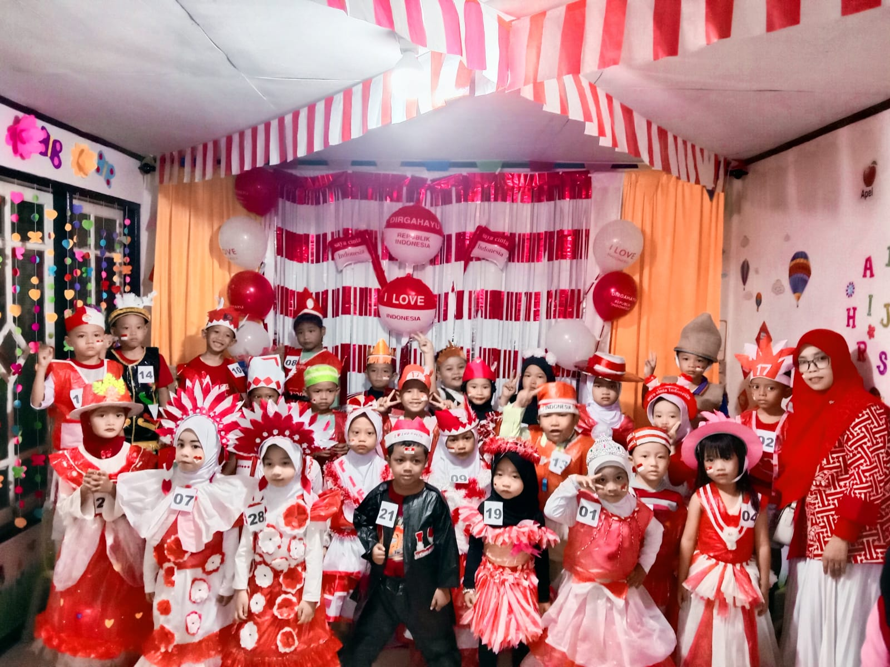
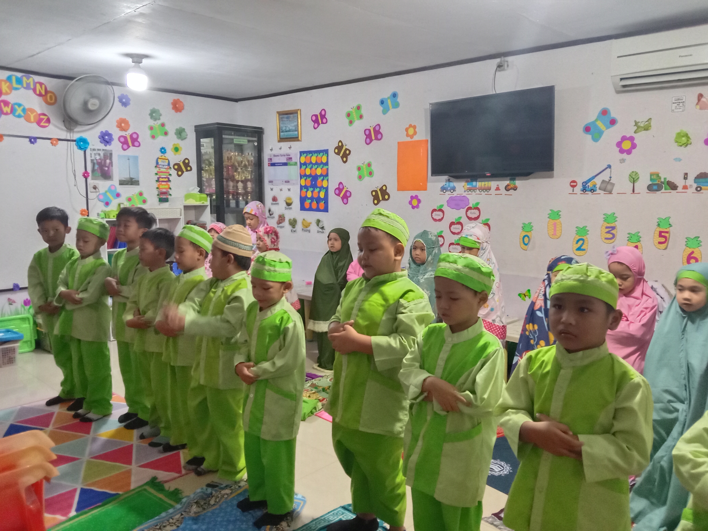

Berdiri Sejak 2008
RA Al Madani telah menjadi bagian dari perjalanan pendidikan anak usia dini bersama masyarakat.
Raudhatul Athfal � Berdiri Sejak 2008
Membangun generasi Islami dan Qur’ani melalui pendidikan anak usia dini yang hangat, menyenangkan, dan mendukung tumbuh kembang anak.


Tentang Kami
RA Al Madani didirikan pada tahun 2008 oleh Yayasan Mentari Hanan Madani sebagai bentuk kepedulian dan komitmen terhadap pendidikan anak usia dini di lingkungan masyarakat sekitar.
Dengan berlandaskan nilai-nilai keislaman dan Al-Qur’an, RA Al Madani berupaya menghadirkan lingkungan pendidikan yang aman, nyaman, dan mendukung perkembangan anak secara menyeluruh.
Selengkapnya tentang kami →Mengenal Lebih Dekat
RA Al Madani hadir sebagai bagian dari komitmen Yayasan Mentari Hanan Madani dalam memberikan pendidikan anak usia dini yang terjangkau dan berkualitas bagi masyarakat.
RA Al Madani telah menjadi bagian dari perjalanan pendidikan anak usia dini bersama masyarakat.
Pendidikan diarahkan untuk menanamkan nilai keislaman dan kecintaan terhadap Al-Qur’an sejak usia dini.
Lingkungan belajar dirancang agar anak dapat berkembang dengan rasa aman, nyaman, dan menyenangkan.
Aktivitas & Dokumentasi
Foto-foto dokumentasi akan diisi dengan foto asli dari kegiatan RA Al Madani.
Fasilitas
Ruang belajar yang nyaman untuk kegiatan pembelajaran harian.
Tempat bermain yang aman untuk menunjang motorik dan sosialisasi anak.
Fasilitas ibadah untuk membiasakan shalat berjamaah sejak dini.
Rincian fasilitas akan diperbarui setelah data resmi dari pihak sekolah tersedia.
Kenapa RA Al Madani
Kami percaya pendidikan usia dini adalah fondasi penting dalam membentuk karakter, kepribadian, dan nilai-nilai kehidupan anak.
Kegiatan belajar diiringi pembiasaan akhlak baik dan kecintaan kepada Al-Qur’an.
Guru mendampingi anak dengan perhatian agar anak merasa aman dan senang belajar.
Berdiri sejak 2008 dan menjadi bagian dari lingkungan masyarakat sekitar.
Dikelola Yayasan Mentari Hanan Madani untuk memberikan layanan pendidikan yang dapat diakses masyarakat luas.
Testimoni orang tua akan ditampilkan di sini setelah materi dari pihak sekolah tersedia.
� Menunggu data resmi RA Al Madani
Berita & Kegiatan
Ringkasan singkat kegiatan akan ditampilkan di sini.
Ringkasan singkat kegiatan akan ditampilkan di sini.
Ringkasan singkat kegiatan akan ditampilkan di sini.
Hubungi Kami
Informasi kontak RA Al Madani akan ditambahkan setelah materi dari pihak sekolah tersedia.